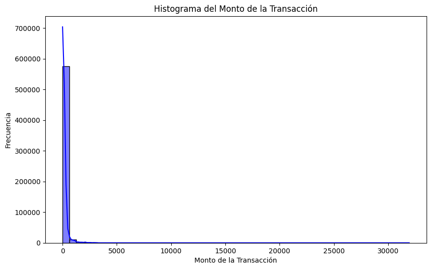
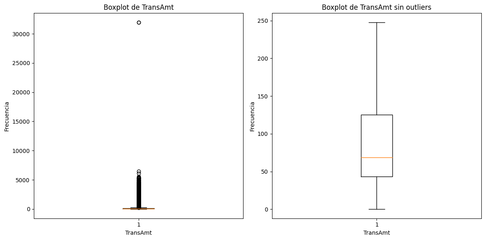
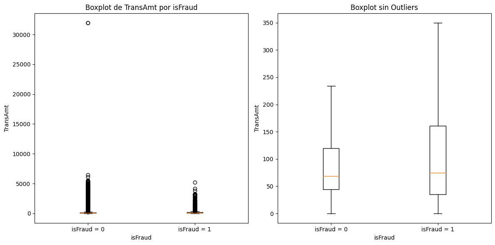
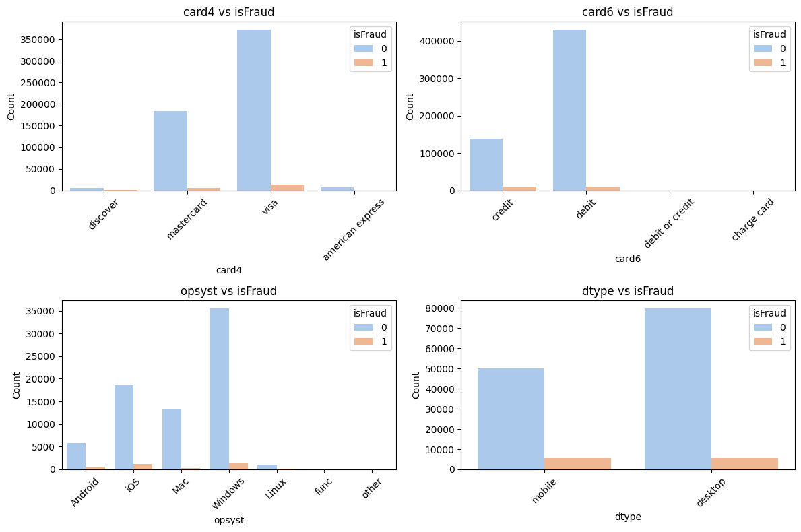
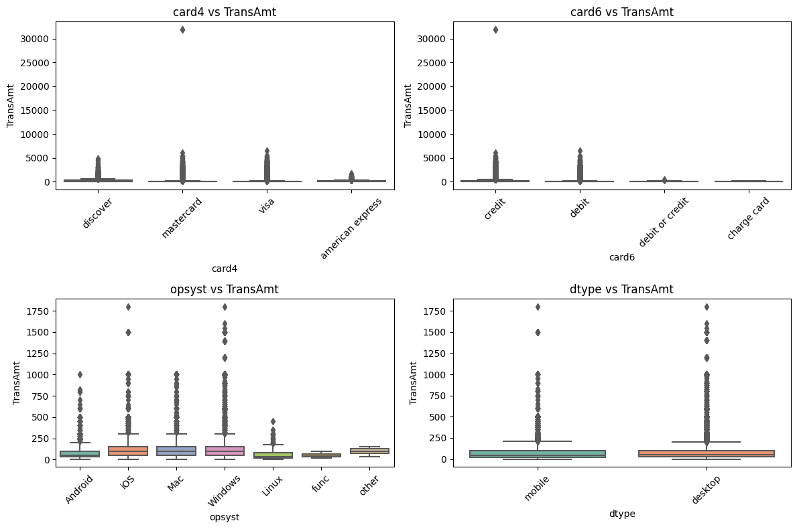
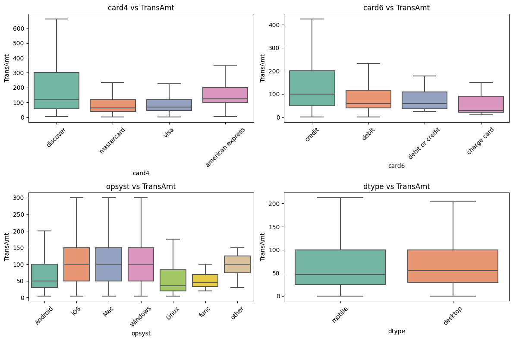
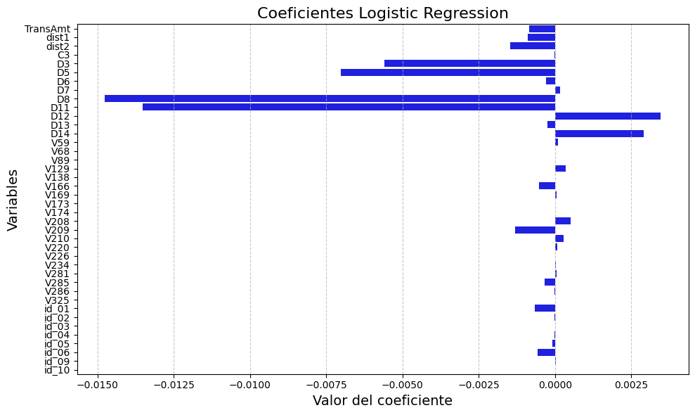

Análisis exploratorio de datos (EDA) - Detección de Fraude#
# Importamos librerias a utilizar
import pandas as pd
import numpy as np
import matplotlib.pyplot as plt
import seaborn as sns
import gc
from statsmodels.stats.outliers_influence import variance_inflation_factor
from sklearn.model_selection import train_test_split
from sklearn.linear_model import LogisticRegression
from sklearn.preprocessing import OneHotEncoder
from sklearn.impute import SimpleImputer
import numpy as np
# importamos datos Train Transaction
filename = 'C:/Users/luis_/Desktop/MaestriaEstadisticaAplicada/_8MachineLearning/parcial_practico/fraude/train_transaction.csv'
train_transaction = pd.read_csv(filename)
# importamos datos Train Identity
filename = 'C:/Users/luis_/Desktop/MaestriaEstadisticaAplicada/_8MachineLearning/parcial_practico/fraude/train_identity.csv'
train_identity = pd.read_csv(filename)
# importamos datos Test Transaction
filename = 'C:/Users/luis_/Desktop/MaestriaEstadisticaAplicada/_8MachineLearning/parcial_practico/fraude/test_transaction.csv'
test_transaction = pd.read_csv(filename)
# importamos datos Train Transaction
filename = 'C:/Users/luis_/Desktop/MaestriaEstadisticaAplicada/_8MachineLearning/parcial_practico/fraude/test_identity.csv'
test_identity = pd.read_csv(filename)
# Unión de las bases
train_data = pd.merge(train_transaction, train_identity, on='TransactionID', how='left')
test_data = pd.merge(test_transaction, test_identity, on='TransactionID', how='left')
Descripción de los datos#
El conjunto de datos corresponde a transacciones de hechas por tarjetas de crédito, las cuales algunas son fraudulentas. El conjunto de datos como se puede ver en la tabla de abajo contine información como el monto de la transacción, método de pago, tipo de producto, datos del dispositivo utilizado, así como datos del usuario.
El objetivo de este trabajo es construir un modelo de clasificación binaria que prediga si en una transacción ocurrió o no fraude.
Variable |
Abreviación |
Descripción |
|---|---|---|
isFraud |
isFraud |
Indicador de fraude (1: fraude, 0: no fraude). |
TransactionID |
TransID |
ID única de la transacción. |
TransactionDT |
TransDT |
Tiempo desde el inicio de los datos (en segundos). |
TransactionAmt |
TransAmt |
Monto de la transacción. |
ProductCD |
ProdCD |
Código del tipo de producto financiero. |
card1 |
card1 |
Identificador parcial del titular de la tarjeta. |
card2 |
card2 |
Posible banco emisor de la tarjeta. |
card3 |
card3 |
Región del emisor de la tarjeta. |
card4 |
card4 |
Tipo de tarjeta (Visa, MasterCard, etc.). |
card5 |
card5 |
Código del banco emisor. |
card6 |
card6 |
Tipo de cuenta (crédito, débito). |
addr1 |
addr1 |
Código de región del comprador. |
addr2 |
addr2 |
Zona más específica (posiblemente país). |
dist1 |
dist1 |
Distancia entre comprador y comerciante (posiblemente geográfica). |
dist2 |
dist2 |
Otra medida de distancia (más específica). |
P_emaildomain |
P_email |
Dominio del correo del comprador. |
R_emaildomain |
R_email |
Dominio del correo del receptor. |
C1-C14 |
C1-C14 |
Variables agregadas sobre comportamiento del cliente. |
D1-D15 |
D1-D15 |
Variables relacionadas con tiempo desde eventos anteriores. |
M1-M9 |
M1-M9 |
Validaciones binarias (coincidencia de info, navegador, etc.). |
V1-V339 |
V1-V339 |
Variables encriptadas del comportamiento y características del usuario. |
id_01-id_38 |
id_01-id_38 |
Variables relacionadas con riesgo, transacción y dispositivo. |
DeviceType |
dtype |
Tipo de dispositivo usado (desktop, mobile). |
DeviceInfo |
dinfo |
Información detallada del dispositivo usado. |
El objetivo de este trabajo es construir un modelo de clasificación binaria que prediga si en una transacción ocurrió o no fraude. Antes de construir un modelo, se hará un análisis exploratorio de los datos y antes comenzar con el análisis vamos a reducir los nombres extensos de algunas columnas, en la tabla anterior se puede ver la abreviación que se le dará a las columnas.
# Realizamos en cambio de nombre de las columnas
rename_dict = {
'TransactionID': 'TransID',
'TransactionDT': 'TransDT',
'TransactionAmt': 'TransAmt',
'ProductCD': 'ProdCD',
'P_emaildomain': 'P_email',
'R_emaildomain': 'R_email',
'DeviceType': 'dtype',
'DeviceInfo': 'dinfo',
}
train_data.rename(columns=rename_dict, inplace=True)
test_data.rename(columns=rename_dict, inplace=True)
train_data.head()
| TransID | isFraud | TransDT | TransAmt | ProdCD | card1 | card2 | card3 | card4 | card5 | ... | id_31 | id_32 | id_33 | id_34 | id_35 | id_36 | id_37 | id_38 | dtype | dinfo | |
|---|---|---|---|---|---|---|---|---|---|---|---|---|---|---|---|---|---|---|---|---|---|
| 0 | 2987000 | 0 | 86400 | 68.5 | W | 13926 | NaN | 150.0 | discover | 142.0 | ... | NaN | NaN | NaN | NaN | NaN | NaN | NaN | NaN | NaN | NaN |
| 1 | 2987001 | 0 | 86401 | 29.0 | W | 2755 | 404.0 | 150.0 | mastercard | 102.0 | ... | NaN | NaN | NaN | NaN | NaN | NaN | NaN | NaN | NaN | NaN |
| 2 | 2987002 | 0 | 86469 | 59.0 | W | 4663 | 490.0 | 150.0 | visa | 166.0 | ... | NaN | NaN | NaN | NaN | NaN | NaN | NaN | NaN | NaN | NaN |
| 3 | 2987003 | 0 | 86499 | 50.0 | W | 18132 | 567.0 | 150.0 | mastercard | 117.0 | ... | NaN | NaN | NaN | NaN | NaN | NaN | NaN | NaN | NaN | NaN |
| 4 | 2987004 | 0 | 86506 | 50.0 | H | 4497 | 514.0 | 150.0 | mastercard | 102.0 | ... | samsung browser 6.2 | 32.0 | 2220x1080 | match_status:2 | T | F | T | T | mobile | SAMSUNG SM-G892A Build/NRD90M |
5 rows × 434 columns
test_data.head()
| TransID | TransDT | TransAmt | ProdCD | card1 | card2 | card3 | card4 | card5 | card6 | ... | id-31 | id-32 | id-33 | id-34 | id-35 | id-36 | id-37 | id-38 | dtype | dinfo | |
|---|---|---|---|---|---|---|---|---|---|---|---|---|---|---|---|---|---|---|---|---|---|
| 0 | 3663549 | 18403224 | 31.95 | W | 10409 | 111.0 | 150.0 | visa | 226.0 | debit | ... | NaN | NaN | NaN | NaN | NaN | NaN | NaN | NaN | NaN | NaN |
| 1 | 3663550 | 18403263 | 49.00 | W | 4272 | 111.0 | 150.0 | visa | 226.0 | debit | ... | NaN | NaN | NaN | NaN | NaN | NaN | NaN | NaN | NaN | NaN |
| 2 | 3663551 | 18403310 | 171.00 | W | 4476 | 574.0 | 150.0 | visa | 226.0 | debit | ... | NaN | NaN | NaN | NaN | NaN | NaN | NaN | NaN | NaN | NaN |
| 3 | 3663552 | 18403310 | 284.95 | W | 10989 | 360.0 | 150.0 | visa | 166.0 | debit | ... | NaN | NaN | NaN | NaN | NaN | NaN | NaN | NaN | NaN | NaN |
| 4 | 3663553 | 18403317 | 67.95 | W | 18018 | 452.0 | 150.0 | mastercard | 117.0 | debit | ... | NaN | NaN | NaN | NaN | NaN | NaN | NaN | NaN | NaN | NaN |
5 rows × 433 columns
Luego de haber realizado el cambio de nombres podemos comenzar con el análisis de los datos. Solo se hará el análisis a los datos de entrenamiento, ya que los datos de prueba no cuentan con la columna de respuesta ‘isFraud’ por lo que no la podremos utilizar en el modelo.
Análisis Train Data#
Estadisticas descriptivas#
# Inspección general
train_data.info()
<class 'pandas.core.frame.DataFrame'>
RangeIndex: 590540 entries, 0 to 590539
Columns: 434 entries, TransID to dinfo
dtypes: float64(399), int64(4), object(31)
memory usage: 1.9+ GB
Vemos que el conjunto de entrenamiento cuenta con 590540 filas y 434 columnas. De las columnas 399 cuentan con datos decimales, 4 con enteros y 31 con datos tipo texto.
# Estadisticas descriptivas de las variables.
train_data.describe()
| TransID | isFraud | TransDT | TransAmt | card1 | card2 | card3 | card5 | addr1 | addr2 | ... | id_17 | id_18 | id_19 | id_20 | id_21 | id_22 | id_24 | id_25 | id_26 | id_32 | |
|---|---|---|---|---|---|---|---|---|---|---|---|---|---|---|---|---|---|---|---|---|---|
| count | 5.905400e+05 | 590540.000000 | 5.905400e+05 | 590540.000000 | 590540.000000 | 581607.000000 | 588975.000000 | 586281.000000 | 524834.000000 | 524834.000000 | ... | 139369.000000 | 45113.000000 | 139318.000000 | 139261.000000 | 5159.000000 | 5169.000000 | 4747.000000 | 5132.000000 | 5163.000000 | 77586.000000 |
| mean | 3.282270e+06 | 0.034990 | 7.372311e+06 | 135.027176 | 9898.734658 | 362.555488 | 153.194925 | 199.278897 | 290.733794 | 86.800630 | ... | 189.451377 | 14.237337 | 353.128174 | 403.882666 | 368.269820 | 16.002708 | 12.800927 | 329.608924 | 149.070308 | 26.508597 |
| std | 1.704744e+05 | 0.183755 | 4.617224e+06 | 239.162522 | 4901.170153 | 157.793246 | 11.336444 | 41.244453 | 101.741072 | 2.690623 | ... | 30.375360 | 1.561302 | 141.095343 | 152.160327 | 198.847038 | 6.897665 | 2.372447 | 97.461089 | 32.101995 | 3.737502 |
| min | 2.987000e+06 | 0.000000 | 8.640000e+04 | 0.251000 | 1000.000000 | 100.000000 | 100.000000 | 100.000000 | 100.000000 | 10.000000 | ... | 100.000000 | 10.000000 | 100.000000 | 100.000000 | 100.000000 | 10.000000 | 11.000000 | 100.000000 | 100.000000 | 0.000000 |
| 25% | 3.134635e+06 | 0.000000 | 3.027058e+06 | 43.321000 | 6019.000000 | 214.000000 | 150.000000 | 166.000000 | 204.000000 | 87.000000 | ... | 166.000000 | 13.000000 | 266.000000 | 256.000000 | 252.000000 | 14.000000 | 11.000000 | 321.000000 | 119.000000 | 24.000000 |
| 50% | 3.282270e+06 | 0.000000 | 7.306528e+06 | 68.769000 | 9678.000000 | 361.000000 | 150.000000 | 226.000000 | 299.000000 | 87.000000 | ... | 166.000000 | 15.000000 | 341.000000 | 472.000000 | 252.000000 | 14.000000 | 11.000000 | 321.000000 | 149.000000 | 24.000000 |
| 75% | 3.429904e+06 | 0.000000 | 1.124662e+07 | 125.000000 | 14184.000000 | 512.000000 | 150.000000 | 226.000000 | 330.000000 | 87.000000 | ... | 225.000000 | 15.000000 | 427.000000 | 533.000000 | 486.500000 | 14.000000 | 15.000000 | 371.000000 | 169.000000 | 32.000000 |
| max | 3.577539e+06 | 1.000000 | 1.581113e+07 | 31937.391000 | 18396.000000 | 600.000000 | 231.000000 | 237.000000 | 540.000000 | 102.000000 | ... | 229.000000 | 29.000000 | 671.000000 | 661.000000 | 854.000000 | 44.000000 | 26.000000 | 548.000000 | 216.000000 | 32.000000 |
8 rows × 403 columns
# Separar tipos
categorical_cols = train_data.select_dtypes(include=['object', 'category']).columns
binary_cols = [col for col in train_data.columns
if train_data[col].nunique() <= 2 and pd.api.types.is_numeric_dtype(train_data[col])]
numeric_cols = [col for col in train_data.select_dtypes(include=[np.number]).columns
if col not in binary_cols]
# Estadísticas descriptivas
print("Estadísticas numéricas continuas:")
print(train_data[numeric_cols].describe())
print("Variables binarias (0/1):")
print(train_data[binary_cols].mean().rename("Proporción de 1s"))
print("Frecuencias de variables categóricas:")
for col in categorical_cols:
print(f"\nColumna: {col}")
print(train_data[col].value_counts(dropna=False).head(5)) # Top 5 categorías (incluye NaN)
Estadísticas numéricas continuas:
TransID TransDT TransAmt card1 \
count 5.905400e+05 5.905400e+05 590540.000000 590540.000000
mean 3.282270e+06 7.372311e+06 135.027176 9898.734658
std 1.704744e+05 4.617224e+06 239.162522 4901.170153
min 2.987000e+06 8.640000e+04 0.251000 1000.000000
25% 3.134635e+06 3.027058e+06 43.321000 6019.000000
50% 3.282270e+06 7.306528e+06 68.769000 9678.000000
75% 3.429904e+06 1.124662e+07 125.000000 14184.000000
max 3.577539e+06 1.581113e+07 31937.391000 18396.000000
card2 card3 card5 addr1 \
count 581607.000000 588975.000000 586281.000000 524834.000000
mean 362.555488 153.194925 199.278897 290.733794
std 157.793246 11.336444 41.244453 101.741072
min 100.000000 100.000000 100.000000 100.000000
25% 214.000000 150.000000 166.000000 204.000000
50% 361.000000 150.000000 226.000000 299.000000
75% 512.000000 150.000000 226.000000 330.000000
max 600.000000 231.000000 237.000000 540.000000
addr2 dist1 ... id_17 id_18 \
count 524834.000000 238269.000000 ... 139369.000000 45113.000000
mean 86.800630 118.502180 ... 189.451377 14.237337
std 2.690623 371.872026 ... 30.375360 1.561302
min 10.000000 0.000000 ... 100.000000 10.000000
25% 87.000000 3.000000 ... 166.000000 13.000000
50% 87.000000 8.000000 ... 166.000000 15.000000
75% 87.000000 24.000000 ... 225.000000 15.000000
max 102.000000 10286.000000 ... 229.000000 29.000000
id_19 id_20 id_21 id_22 id_24 \
count 139318.000000 139261.000000 5159.000000 5169.000000 4747.000000
mean 353.128174 403.882666 368.269820 16.002708 12.800927
std 141.095343 152.160327 198.847038 6.897665 2.372447
min 100.000000 100.000000 100.000000 10.000000 11.000000
25% 266.000000 256.000000 252.000000 14.000000 11.000000
50% 341.000000 472.000000 252.000000 14.000000 11.000000
75% 427.000000 533.000000 486.500000 14.000000 15.000000
max 671.000000 661.000000 854.000000 44.000000 26.000000
id_25 id_26 id_32
count 5132.000000 5163.000000 77586.000000
mean 329.608924 149.070308 26.508597
std 97.461089 32.101995 3.737502
min 100.000000 100.000000 0.000000
25% 321.000000 119.000000 24.000000
50% 321.000000 149.000000 24.000000
75% 371.000000 169.000000 32.000000
max 548.000000 216.000000 32.000000
[8 rows x 395 columns]
Variables binarias (0/1):
isFraud 0.034990
V1 0.999945
V14 0.999500
V41 0.999269
V65 0.999663
V88 0.999246
V107 0.999580
V305 1.000007
Name: Proporción de 1s, dtype: float64
Frecuencias de variables categóricas:
Columna: ProdCD
ProdCD
W 439670
C 68519
R 37699
H 33024
S 11628
Name: count, dtype: int64
Columna: card4
card4
visa 384767
mastercard 189217
american express 8328
discover 6651
NaN 1577
Name: count, dtype: int64
Columna: card6
card6
debit 439938
credit 148986
NaN 1571
debit or credit 30
charge card 15
Name: count, dtype: int64
Columna: P_email
P_email
gmail.com 228355
yahoo.com 100934
NaN 94456
hotmail.com 45250
anonymous.com 36998
Name: count, dtype: int64
Columna: R_email
R_email
NaN 453249
gmail.com 57147
hotmail.com 27509
anonymous.com 20529
yahoo.com 11842
Name: count, dtype: int64
Columna: M1
M1
T 319415
NaN 271100
F 25
Name: count, dtype: int64
Columna: M2
M2
T 285468
NaN 271100
F 33972
Name: count, dtype: int64
Columna: M3
M3
NaN 271100
T 251731
F 67709
Name: count, dtype: int64
Columna: M4
M4
NaN 281444
M0 196405
M2 59865
M1 52826
Name: count, dtype: int64
Columna: M5
M5
NaN 350482
F 132491
T 107567
Name: count, dtype: int64
Columna: M6
M6
F 227856
T 193324
NaN 169360
Name: count, dtype: int64
Columna: M7
M7
NaN 346265
F 211374
T 32901
Name: count, dtype: int64
Columna: M8
M8
NaN 346252
F 155251
T 89037
Name: count, dtype: int64
Columna: M9
M9
NaN 346252
T 205656
F 38632
Name: count, dtype: int64
Columna: id_12
id_12
NaN 446307
NotFound 123025
Found 21208
Name: count, dtype: int64
Columna: id_15
id_15
NaN 449555
Found 67728
New 61612
Unknown 11645
Name: count, dtype: int64
Columna: id_16
id_16
NaN 461200
Found 66324
NotFound 63016
Name: count, dtype: int64
Columna: id_23
id_23
NaN 585371
IP_PROXY:TRANSPARENT 3489
IP_PROXY:ANONYMOUS 1071
IP_PROXY:HIDDEN 609
Name: count, dtype: int64
Columna: id_27
id_27
NaN 585371
Found 5155
NotFound 14
Name: count, dtype: int64
Columna: id_28
id_28
NaN 449562
Found 76232
New 64746
Name: count, dtype: int64
Columna: id_29
id_29
NaN 449562
Found 74926
NotFound 66052
Name: count, dtype: int64
Columna: id_30
id_30
NaN 512975
Windows 10 21155
Windows 7 13110
iOS 11.2.1 3722
iOS 11.1.2 3699
Name: count, dtype: int64
Columna: id_31
id_31
NaN 450258
chrome 63.0 22000
mobile safari 11.0 13423
mobile safari generic 11474
ie 11.0 for desktop 9030
Name: count, dtype: int64
Columna: id_33
id_33
NaN 517251
1920x1080 16874
1366x768 8605
1334x750 6447
2208x1242 4900
Name: count, dtype: int64
Columna: id_34
id_34
NaN 512735
match_status:2 60011
match_status:1 17376
match_status:0 415
match_status:-1 3
Name: count, dtype: int64
Columna: id_35
id_35
NaN 449555
T 77814
F 63171
Name: count, dtype: int64
Columna: id_36
id_36
NaN 449555
F 134066
T 6919
Name: count, dtype: int64
Columna: id_37
id_37
NaN 449555
T 110452
F 30533
Name: count, dtype: int64
Columna: id_38
id_38
NaN 449555
F 73922
T 67063
Name: count, dtype: int64
Columna: dtype
dtype
NaN 449730
desktop 85165
mobile 55645
Name: count, dtype: int64
Columna: dinfo
dinfo
NaN 471874
Windows 47722
iOS Device 19782
MacOS 12573
Trident/7.0 7440
Name: count, dtype: int64
La variable de respuesta isFraud tiene el 3.5% de sus observaciones como 1, lo que corresponde a 20663 observaciones, y el resto como 0, lo que indica que hay un desbalance en el conjunto de datos.
Para el monto de la transacción vemos que la medio es de 135, con valor mínimo de 0.35 y máximo de 31937, lo que indica una cola larga a la derecha, es decir una distribución asimétrica positiva.
La variable de card4, la cual corresponde al tipo de tarjeta, muestra que la mayoría de las transacciones, el 65%, fueron realizadas con una tarjeta Visa, seguida de la tarjeta Mastercard. Entre ambas tienen el 96% de las transacciones. Los otros tipos de tarjeta son American Express y Discovery. El número de datos faltantes es alrededor del 0.3%.
La variable card6, muestra que la mayoría de las tarjetas son debito (74%) y las tarjetas crédito corresponden al 25% de los datos. Hay un par de categorías poco comunes llamadas ‘debit or credit’ y ‘charge card’.
El dominio más común de correo utilizado por el comprador es Gmail, seguido por Hotmail. El 76% de los datos en esta categoría son faltantes. Con respecto al sistema operativo (id_30) vemos que dominan Windows 10, Windows 7 Y iOS 11. En esta variable también podemos ver que alrededor del 87% de las observaciones son faltantes.
El tipo de dispositivo más utilizado para realizar estas transacciones es Desktop con alrededor del 55% de las transacciones y Mobile con el 45%. Aun así, esta columna también cuenta con alrededor del 76% de las observaciones faltantes.
Datos faltantes#
# 1. Conteo de valores faltantes por columna
missing_count = train_data.isna().sum()
# 2. Porcentaje de valores faltantes
missing_percent = (missing_count / len(train_data)) * 100
# 3. DataFrame resumen
missing_df = pd.DataFrame({
'missing_count': missing_count,
'missing_percent': missing_percent.round(2)
})
# Filtrar solo las columnas con al menos 1 valor faltante
missing_df = missing_df[missing_df['missing_count'] > 0].sort_values('missing_percent', ascending=False)
print(missing_df)
missing_count missing_percent
id_24 585793 99.20
id_07 585385 99.13
id_08 585385 99.13
id_21 585381 99.13
id_26 585377 99.13
... ... ...
V285 12 0.00
V284 12 0.00
V280 12 0.00
V279 12 0.00
V312 12 0.00
[414 rows x 2 columns]
print(missing_df.to_markdown())
| | missing_count | missing_percent |
|:--------|----------------:|------------------:|
| id_24 | 585793 | 99.2 |
| id_07 | 585385 | 99.13 |
| id_08 | 585385 | 99.13 |
| id_21 | 585381 | 99.13 |
| id_26 | 585377 | 99.13 |
| id_25 | 585408 | 99.13 |
| id_23 | 585371 | 99.12 |
| id_27 | 585371 | 99.12 |
| id_22 | 585371 | 99.12 |
| dist2 | 552913 | 93.63 |
| D7 | 551623 | 93.41 |
| id_18 | 545427 | 92.36 |
| D13 | 528588 | 89.51 |
| D14 | 528353 | 89.47 |
| D12 | 525823 | 89.04 |
| id_04 | 524216 | 88.77 |
| id_03 | 524216 | 88.77 |
| D6 | 517353 | 87.61 |
| id_33 | 517251 | 87.59 |
| id_10 | 515614 | 87.31 |
| D9 | 515614 | 87.31 |
| id_09 | 515614 | 87.31 |
| D8 | 515614 | 87.31 |
| id_30 | 512975 | 86.87 |
| id_32 | 512954 | 86.86 |
| id_34 | 512735 | 86.82 |
| id_14 | 510496 | 86.45 |
| V157 | 508595 | 86.12 |
| V155 | 508595 | 86.12 |
| V156 | 508595 | 86.12 |
| V154 | 508595 | 86.12 |
| V153 | 508595 | 86.12 |
| V151 | 508589 | 86.12 |
| V152 | 508589 | 86.12 |
| V150 | 508589 | 86.12 |
| V139 | 508595 | 86.12 |
| V158 | 508595 | 86.12 |
| V159 | 508589 | 86.12 |
| V160 | 508589 | 86.12 |
| V161 | 508595 | 86.12 |
| V162 | 508595 | 86.12 |
| V148 | 508595 | 86.12 |
| V163 | 508595 | 86.12 |
| V164 | 508589 | 86.12 |
| V165 | 508589 | 86.12 |
| V149 | 508595 | 86.12 |
| V166 | 508589 | 86.12 |
| V140 | 508595 | 86.12 |
| V141 | 508595 | 86.12 |
| V142 | 508595 | 86.12 |
| V143 | 508589 | 86.12 |
| V144 | 508589 | 86.12 |
| V145 | 508589 | 86.12 |
| V146 | 508595 | 86.12 |
| V147 | 508595 | 86.12 |
| V138 | 508595 | 86.12 |
| V329 | 508189 | 86.05 |
| V336 | 508189 | 86.05 |
| V338 | 508189 | 86.05 |
| V337 | 508189 | 86.05 |
| V335 | 508189 | 86.05 |
| V328 | 508189 | 86.05 |
| V334 | 508189 | 86.05 |
| V333 | 508189 | 86.05 |
| V332 | 508189 | 86.05 |
| V331 | 508189 | 86.05 |
| V330 | 508189 | 86.05 |
| V322 | 508189 | 86.05 |
| V323 | 508189 | 86.05 |
| V324 | 508189 | 86.05 |
| V325 | 508189 | 86.05 |
| V326 | 508189 | 86.05 |
| V327 | 508189 | 86.05 |
| V339 | 508189 | 86.05 |
| dinfo | 471874 | 79.91 |
| id_13 | 463220 | 78.44 |
| id_16 | 461200 | 78.1 |
| V252 | 460110 | 77.91 |
| V266 | 460110 | 77.91 |
| V254 | 460110 | 77.91 |
| V257 | 460110 | 77.91 |
| V258 | 460110 | 77.91 |
| V260 | 460110 | 77.91 |
| V261 | 460110 | 77.91 |
| V262 | 460110 | 77.91 |
| V263 | 460110 | 77.91 |
| V264 | 460110 | 77.91 |
| V265 | 460110 | 77.91 |
| V267 | 460110 | 77.91 |
| V217 | 460110 | 77.91 |
| V268 | 460110 | 77.91 |
| V269 | 460110 | 77.91 |
| V273 | 460110 | 77.91 |
| V274 | 460110 | 77.91 |
| V275 | 460110 | 77.91 |
| V276 | 460110 | 77.91 |
| V277 | 460110 | 77.91 |
| V278 | 460110 | 77.91 |
| V249 | 460110 | 77.91 |
| V246 | 460110 | 77.91 |
| V218 | 460110 | 77.91 |
| V237 | 460110 | 77.91 |
| V224 | 460110 | 77.91 |
| V225 | 460110 | 77.91 |
| V226 | 460110 | 77.91 |
| V228 | 460110 | 77.91 |
| V229 | 460110 | 77.91 |
| V230 | 460110 | 77.91 |
| V231 | 460110 | 77.91 |
| V232 | 460110 | 77.91 |
| V233 | 460110 | 77.91 |
| V235 | 460110 | 77.91 |
| V236 | 460110 | 77.91 |
| V219 | 460110 | 77.91 |
| V240 | 460110 | 77.91 |
| V241 | 460110 | 77.91 |
| V242 | 460110 | 77.91 |
| V243 | 460110 | 77.91 |
| V244 | 460110 | 77.91 |
| V253 | 460110 | 77.91 |
| V247 | 460110 | 77.91 |
| V248 | 460110 | 77.91 |
| V223 | 460110 | 77.91 |
| id_05 | 453675 | 76.82 |
| id_06 | 453675 | 76.82 |
| R_email | 453249 | 76.75 |
| id_20 | 451279 | 76.42 |
| id_19 | 451222 | 76.41 |
| id_17 | 451171 | 76.4 |
| V167 | 450909 | 76.36 |
| V168 | 450909 | 76.36 |
| V216 | 450909 | 76.36 |
| V172 | 450909 | 76.36 |
| V215 | 450909 | 76.36 |
| V214 | 450909 | 76.36 |
| V213 | 450909 | 76.36 |
| V212 | 450909 | 76.36 |
| V211 | 450909 | 76.36 |
| V207 | 450909 | 76.36 |
| V206 | 450909 | 76.36 |
| V205 | 450909 | 76.36 |
| V204 | 450909 | 76.36 |
| V203 | 450909 | 76.36 |
| V202 | 450909 | 76.36 |
| V199 | 450909 | 76.36 |
| V196 | 450909 | 76.36 |
| V193 | 450909 | 76.36 |
| V192 | 450909 | 76.36 |
| V190 | 450909 | 76.36 |
| V187 | 450909 | 76.36 |
| V186 | 450909 | 76.36 |
| V183 | 450909 | 76.36 |
| V182 | 450909 | 76.36 |
| V181 | 450909 | 76.36 |
| V179 | 450909 | 76.36 |
| V178 | 450909 | 76.36 |
| V177 | 450909 | 76.36 |
| V176 | 450909 | 76.36 |
| V191 | 450909 | 76.36 |
| V173 | 450909 | 76.36 |
| V169 | 450721 | 76.32 |
| V201 | 450721 | 76.32 |
| V174 | 450721 | 76.32 |
| V175 | 450721 | 76.32 |
| V180 | 450721 | 76.32 |
| V184 | 450721 | 76.32 |
| V185 | 450721 | 76.32 |
| V188 | 450721 | 76.32 |
| V189 | 450721 | 76.32 |
| V194 | 450721 | 76.32 |
| V195 | 450721 | 76.32 |
| V170 | 450721 | 76.32 |
| V198 | 450721 | 76.32 |
| V200 | 450721 | 76.32 |
| V197 | 450721 | 76.32 |
| V171 | 450721 | 76.32 |
| V208 | 450721 | 76.32 |
| V209 | 450721 | 76.32 |
| V210 | 450721 | 76.32 |
| id_31 | 450258 | 76.25 |
| dtype | 449730 | 76.16 |
| id_02 | 449668 | 76.15 |
| id_37 | 449555 | 76.13 |
| id_11 | 449562 | 76.13 |
| id_28 | 449562 | 76.13 |
| id_29 | 449562 | 76.13 |
| id_35 | 449555 | 76.13 |
| id_15 | 449555 | 76.13 |
| id_38 | 449555 | 76.13 |
| id_36 | 449555 | 76.13 |
| V245 | 449124 | 76.05 |
| V234 | 449124 | 76.05 |
| V255 | 449124 | 76.05 |
| V227 | 449124 | 76.05 |
| V270 | 449124 | 76.05 |
| V251 | 449124 | 76.05 |
| V222 | 449124 | 76.05 |
| V221 | 449124 | 76.05 |
| V220 | 449124 | 76.05 |
| V256 | 449124 | 76.05 |
| V250 | 449124 | 76.05 |
| V239 | 449124 | 76.05 |
| V259 | 449124 | 76.05 |
| V271 | 449124 | 76.05 |
| V272 | 449124 | 76.05 |
| V238 | 449124 | 76.05 |
| id_01 | 446307 | 75.58 |
| id_12 | 446307 | 75.58 |
| dist1 | 352271 | 59.65 |
| M5 | 350482 | 59.35 |
| M7 | 346265 | 58.64 |
| M8 | 346252 | 58.63 |
| M9 | 346252 | 58.63 |
| D5 | 309841 | 52.47 |
| M4 | 281444 | 47.66 |
| D2 | 280797 | 47.55 |
| D11 | 279287 | 47.29 |
| V10 | 279287 | 47.29 |
| V11 | 279287 | 47.29 |
| V8 | 279287 | 47.29 |
| V1 | 279287 | 47.29 |
| V4 | 279287 | 47.29 |
| V7 | 279287 | 47.29 |
| V6 | 279287 | 47.29 |
| V2 | 279287 | 47.29 |
| V9 | 279287 | 47.29 |
| V5 | 279287 | 47.29 |
| V3 | 279287 | 47.29 |
| M3 | 271100 | 45.91 |
| M2 | 271100 | 45.91 |
| M1 | 271100 | 45.91 |
| D3 | 262878 | 44.51 |
| M6 | 169360 | 28.68 |
| V38 | 168969 | 28.61 |
| V49 | 168969 | 28.61 |
| V39 | 168969 | 28.61 |
| V48 | 168969 | 28.61 |
| V41 | 168969 | 28.61 |
| V51 | 168969 | 28.61 |
| V43 | 168969 | 28.61 |
| V47 | 168969 | 28.61 |
| V52 | 168969 | 28.61 |
| V46 | 168969 | 28.61 |
| V45 | 168969 | 28.61 |
| V37 | 168969 | 28.61 |
| V44 | 168969 | 28.61 |
| V42 | 168969 | 28.61 |
| V40 | 168969 | 28.61 |
| V36 | 168969 | 28.61 |
| V35 | 168969 | 28.61 |
| V50 | 168969 | 28.61 |
| D4 | 168922 | 28.6 |
| P_email | 94456 | 15.99 |
| V94 | 89164 | 15.1 |
| V93 | 89164 | 15.1 |
| V92 | 89164 | 15.1 |
| V91 | 89164 | 15.1 |
| V90 | 89164 | 15.1 |
| V89 | 89164 | 15.1 |
| V88 | 89164 | 15.1 |
| V86 | 89164 | 15.1 |
| V85 | 89164 | 15.1 |
| V84 | 89164 | 15.1 |
| V83 | 89164 | 15.1 |
| V82 | 89164 | 15.1 |
| V81 | 89164 | 15.1 |
| V80 | 89164 | 15.1 |
| V79 | 89164 | 15.1 |
| V78 | 89164 | 15.1 |
| V77 | 89164 | 15.1 |
| V76 | 89164 | 15.1 |
| V75 | 89164 | 15.1 |
| V87 | 89164 | 15.1 |
| D15 | 89113 | 15.09 |
| V73 | 77096 | 13.06 |
| V53 | 77096 | 13.06 |
| V64 | 77096 | 13.06 |
| V74 | 77096 | 13.06 |
| V54 | 77096 | 13.06 |
| V72 | 77096 | 13.06 |
| V71 | 77096 | 13.06 |
| V70 | 77096 | 13.06 |
| V68 | 77096 | 13.06 |
| V67 | 77096 | 13.06 |
| V66 | 77096 | 13.06 |
| V65 | 77096 | 13.06 |
| V69 | 77096 | 13.06 |
| V63 | 77096 | 13.06 |
| V61 | 77096 | 13.06 |
| V60 | 77096 | 13.06 |
| V59 | 77096 | 13.06 |
| V58 | 77096 | 13.06 |
| V57 | 77096 | 13.06 |
| V55 | 77096 | 13.06 |
| V62 | 77096 | 13.06 |
| V56 | 77096 | 13.06 |
| V13 | 76073 | 12.88 |
| V23 | 76073 | 12.88 |
| V22 | 76073 | 12.88 |
| V21 | 76073 | 12.88 |
| V12 | 76073 | 12.88 |
| V16 | 76073 | 12.88 |
| V14 | 76073 | 12.88 |
| V15 | 76073 | 12.88 |
| V17 | 76073 | 12.88 |
| V18 | 76073 | 12.88 |
| V25 | 76073 | 12.88 |
| V24 | 76073 | 12.88 |
| V32 | 76073 | 12.88 |
| V26 | 76073 | 12.88 |
| V27 | 76073 | 12.88 |
| V28 | 76073 | 12.88 |
| V29 | 76073 | 12.88 |
| V30 | 76073 | 12.88 |
| V31 | 76073 | 12.88 |
| V33 | 76073 | 12.88 |
| V34 | 76073 | 12.88 |
| V20 | 76073 | 12.88 |
| V19 | 76073 | 12.88 |
| D10 | 76022 | 12.87 |
| addr2 | 65706 | 11.13 |
| addr1 | 65706 | 11.13 |
| card2 | 8933 | 1.51 |
| card5 | 4259 | 0.72 |
| card3 | 1565 | 0.27 |
| card4 | 1577 | 0.27 |
| card6 | 1571 | 0.27 |
| V289 | 1269 | 0.21 |
| D1 | 1269 | 0.21 |
| V281 | 1269 | 0.21 |
| V282 | 1269 | 0.21 |
| V283 | 1269 | 0.21 |
| V288 | 1269 | 0.21 |
| V315 | 1269 | 0.21 |
| V313 | 1269 | 0.21 |
| V314 | 1269 | 0.21 |
| V300 | 1269 | 0.21 |
| V301 | 1269 | 0.21 |
| V296 | 1269 | 0.21 |
| V133 | 314 | 0.05 |
| V112 | 314 | 0.05 |
| V111 | 314 | 0.05 |
| V131 | 314 | 0.05 |
| V130 | 314 | 0.05 |
| V129 | 314 | 0.05 |
| V110 | 314 | 0.05 |
| V109 | 314 | 0.05 |
| V114 | 314 | 0.05 |
| V108 | 314 | 0.05 |
| V128 | 314 | 0.05 |
| V107 | 314 | 0.05 |
| V106 | 314 | 0.05 |
| V105 | 314 | 0.05 |
| V104 | 314 | 0.05 |
| V103 | 314 | 0.05 |
| V113 | 314 | 0.05 |
| V115 | 314 | 0.05 |
| V132 | 314 | 0.05 |
| V122 | 314 | 0.05 |
| V135 | 314 | 0.05 |
| V136 | 314 | 0.05 |
| V137 | 314 | 0.05 |
| V125 | 314 | 0.05 |
| V124 | 314 | 0.05 |
| V123 | 314 | 0.05 |
| V121 | 314 | 0.05 |
| V134 | 314 | 0.05 |
| V101 | 314 | 0.05 |
| V120 | 314 | 0.05 |
| V119 | 314 | 0.05 |
| V118 | 314 | 0.05 |
| V117 | 314 | 0.05 |
| V116 | 314 | 0.05 |
| V102 | 314 | 0.05 |
| V95 | 314 | 0.05 |
| V100 | 314 | 0.05 |
| V96 | 314 | 0.05 |
| V99 | 314 | 0.05 |
| V127 | 314 | 0.05 |
| V126 | 314 | 0.05 |
| V97 | 314 | 0.05 |
| V98 | 314 | 0.05 |
| V308 | 12 | 0 |
| V307 | 12 | 0 |
| V306 | 12 | 0 |
| V305 | 12 | 0 |
| V304 | 12 | 0 |
| V303 | 12 | 0 |
| V302 | 12 | 0 |
| V290 | 12 | 0 |
| V298 | 12 | 0 |
| V297 | 12 | 0 |
| V295 | 12 | 0 |
| V294 | 12 | 0 |
| V293 | 12 | 0 |
| V292 | 12 | 0 |
| V291 | 12 | 0 |
| V299 | 12 | 0 |
| V309 | 12 | 0 |
| V310 | 12 | 0 |
| V311 | 12 | 0 |
| V316 | 12 | 0 |
| V317 | 12 | 0 |
| V318 | 12 | 0 |
| V319 | 12 | 0 |
| V320 | 12 | 0 |
| V321 | 12 | 0 |
| V287 | 12 | 0 |
| V286 | 12 | 0 |
| V285 | 12 | 0 |
| V284 | 12 | 0 |
| V280 | 12 | 0 |
| V279 | 12 | 0 |
| V312 | 12 | 0 |
Vemos que 414 variables tienen al menos 1 dato faltante, entre esas 208 variables tienen más del 75% de sus datos faltantes. Las más comunes son las variables del tipo Vxxx, id_xx, y Dxx.
Selección de variables a analizar#
Las variables seleccionadas para el análisis son las siguientes:
isFraud: Transacciones fraudulentas y no fraudulentas
TransAmt: Monto de la transacción
card4: Tipo de tarjeta (Visa, MasterCard, etc.)
card6: Tipo de cuenta (crédito, débito)
is_30: Sistema operativo del dispositivo electrónico
DevType: Tipo de dispositivo electrónico
Antes de analizarlas se hará un cambio a la columna id_30 para que sea más fácil su análisis.
# Valores únicos de la columna id_30
unique_values = train_data['id_30'].unique()
print(unique_values)
[nan 'Android 7.0' 'iOS 11.1.2' 'Mac OS X 10_11_6' 'Windows 10' 'Android'
'Linux' 'iOS 11.0.3' 'Mac OS X 10_7_5' 'Mac OS X 10_12_6'
'Mac OS X 10_13_1' 'iOS 11.1.0' 'Mac OS X 10_9_5' 'Windows 7'
'Windows 8.1' 'Mac' 'iOS 10.3.3' 'Mac OS X 10.12' 'Mac OS X 10_10_5'
'Mac OS X 10_11_5' 'iOS 9.3.5' 'Android 5.1.1' 'Android 7.1.1'
'Android 6.0' 'iOS 10.3.1' 'Mac OS X 10.9' 'iOS 11.1.1' 'Windows Vista'
'iOS 10.3.2' 'iOS 11.0.2' 'Mac OS X 10.11' 'Android 8.0.0' 'iOS 10.2.0'
'iOS 10.2.1' 'iOS 11.0.0' 'Mac OS X 10.10' 'Mac OS X 10_12_3'
'Mac OS X 10_12' 'Android 6.0.1' 'iOS' 'Mac OS X 10.13'
'Mac OS X 10_12_5' 'Mac OS X 10_8_5' 'iOS 11.0.1' 'iOS 10.0.2'
'Android 5.0.2' 'Windows XP' 'iOS 11.2.0' 'Mac OS X 10.6' 'Windows 8'
'Mac OS X 10_6_8' 'Mac OS X 10_11_4' 'Mac OS X 10_12_1' 'iOS 10.1.1'
'Mac OS X 10_11_3' 'Mac OS X 10_12_4' 'Mac OS X 10_13_2' 'Android 4.4.2'
'Mac OS X 10_12_2' 'Android 5.0' 'func' 'Android 7.1.2' 'Android 8.1.0'
'other' 'Mac OS X 10_13_3' 'iOS 11.2.1' 'iOS 11.2.5' 'Windows'
'iOS 11.2.2' 'iOS 11.3.0' 'iOS 11.2.6' 'Mac OS X 10_13_4'
'Mac OS X 10_13_5' 'iOS 11.4.0' 'iOS 11.3.1' 'iOS 11.4.1']
Como podemos ver tiene muchos datos distintos, solo nos interesa el tipo de dispositivo, por lo que crearemos una nueva columna dividiendo id_30 y nos quedándonos solo con la parte inicial. Llamaremos la nueva columns “opsyst”.
# Asumiendo que 'id_30' contiene las cadenas que deseas dividir
train_data['opsyst'] = train_data['id_30'].str.split(' ').str[0]
unique_values = train_data['opsyst'].unique()
print(unique_values)
[nan 'Android' 'iOS' 'Mac' 'Windows' 'Linux' 'func' 'other']
Ahora solo quedamos con 7 categorías. A continuación, seleccionamos las variables a utilizar en el análisis y creamos un nuevo dataframe con ellas.
# Seleccionamos las seis variables
var_selected = ['isFraud', 'TransAmt', 'card4', 'card6', 'opsyst', 'dtype']
train_selected = train_data[var_selected]
train_selected.head()
| isFraud | TransAmt | card4 | card6 | opsyst | dtype | |
|---|---|---|---|---|---|---|
| 0 | 0 | 68.5 | discover | credit | NaN | NaN |
| 1 | 0 | 29.0 | mastercard | credit | NaN | NaN |
| 2 | 0 | 59.0 | visa | debit | NaN | NaN |
| 3 | 0 | 50.0 | mastercard | debit | NaN | NaN |
| 4 | 0 | 50.0 | mastercard | credit | Android | mobile |
Gráficas#
# Histograma del monto de la transacción
plt.figure(figsize=(10, 6))
sns.histplot(train_selected['TransAmt'], kde=True, color='blue', bins=50)
plt.title('Histograma del Monto de la Transacción')
plt.xlabel('Monto de la Transacción')
plt.ylabel('Frecuencia')
plt.show()
C:\Users\luis_\miniconda3\envs\ml_venv\lib\site-packages\seaborn\_oldcore.py:1119: FutureWarning: use_inf_as_na option is deprecated and will be removed in a future version. Convert inf values to NaN before operating instead.
with pd.option_context('mode.use_inf_as_na', True):

La mayoría de los valores están concentrados cerca de 0 y se muestra una larga cola hacia la derecha, lo cual indica valores muy altos como se mencionó anteriormente. El pico más alto ocurre con montos bajos (menos de 100).
# Preparar los datos para el boxplot con y sin outliers
plt.figure(figsize=(12, 6))
# Boxplot con outliers (mostrar los puntos de los outliers)
plt.subplot(1, 2, 1)
plt.boxplot(x=train_selected['TransAmt'])
plt.title('Boxplot de TransAmt')
plt.xlabel('TransAmt')
plt.ylabel('Frecuencia')
# Boxplot sin outliers (no mostrar los puntos de los outliers)
plt.subplot(1, 2, 2)
plt.boxplot(x=train_selected['TransAmt'], showfliers=False)
plt.title('Boxplot de TransAmt sin outliers')
plt.xlabel('TransAmt')
plt.ylabel('Frecuencia')
plt.tight_layout() # Ajusta el espaciado entre los subgráficos
plt.show()

En el grafico de boxplot de la izquierda vemos que hay una gran cantidad de valores atípicos, el rango intercuartil es pequeño en comparación con los valores extremos. Se ve que hay una transacción que supera el monto de 30.000 mientras que la gran mayoría esta por debajo de los 1000.
En el grafico de la derecha vemos el boxplot sin mostrar los atípicos, vemos que las transacciones más comunes están en el rango de 40 a 130.
# Preparar los datos para el boxplot con y sin outliers
plt.figure(figsize=(12, 6))
# Boxplot por variable fraud
data_no_fraud = train_selected.loc[train_selected['isFraud'] == 0, 'TransAmt'].dropna()
data_fraud = train_selected.loc[train_selected['isFraud'] == 1, 'TransAmt'].dropna()
# Boxplot con outliers (mostrar los puntos de los outliers)
plt.subplot(1, 2, 1)
plt.boxplot([data_no_fraud, data_fraud], labels=['isFraud = 0', 'isFraud = 1'])
plt.title('Boxplot de TransAmt por isFraud')
plt.xlabel('isFraud')
plt.ylabel('TransAmt')
# Boxplot sin outliers (no mostrar los puntos de los outliers)
plt.subplot(1, 2, 2)
plt.boxplot([data_no_fraud, data_fraud], labels=['isFraud = 0', 'isFraud = 1'], showfliers=False)
plt.title('Boxplot sin Outliers')
plt.xlabel('isFraud')
plt.ylabel('TransAmt')
plt.tight_layout() # Ajusta el espaciado entre los subgráficos
plt.show()

Se observa en el grafico de la izquierda que tanto para isFraud = 0 (sin fraude) como para isFraud = 1 (fraude) hay muchísimos valores atípicos en el monto de la transacción. Vemos que la transacción más alta de aproximadamente 30.000 ocurre cuando no hubo fraude.
En el grafico de la derecha vemos que cuando no hubo fraude el rango llega a aproximadamente 230 y cuando si hubo este llega a 350. Vemos que la mediana del monto cuando hubo fraude es más alta que en grupo donde no hubo. Esto sugiere que el monto podría ser una variable útil para predecir fraude.
# Lista de columnas categóricas
col = [ 'card4', 'card6', 'opsyst', 'dtype']
plt.figure(figsize=(12, 8))
for i, col in enumerate(col, 1):
plt.subplot(2, 2, i) # 2 filas x 2 columnas
sns.countplot(x=col,
hue='isFraud',
data=train_selected,
palette='pastel')
plt.title(f'{col} vs isFraud')
plt.xlabel(col)
plt.ylabel('Count')
plt.xticks(rotation=45)
plt.tight_layout()
plt.show()

def generar_tabla_con_porcentaje(df, columna, target='isFraud'):
# Tabla de conteos
tabla = pd.crosstab(df[columna], df[target])
# Asegurar que existan ambas columnas 0 y 1
if 0 not in tabla.columns:
tabla[0] = 0
if 1 not in tabla.columns:
tabla[1] = 0
# Calcular % de fraude
tabla['% fraude'] = tabla[1] / (tabla[0] + tabla[1]) * 100
# Ordenar de mayor a menor % de fraude
tabla = tabla.sort_values('% fraude', ascending=False)
return tabla
# Generamos las tablas
tablas = {}
for columna in ['card4', 'card6', 'opsyst', 'dtype']:
tablas[columna] = generar_tabla_con_porcentaje(train_selected, columna)
# Mostrar las tablas
for nombre, tabla in tablas.items():
print(f"\n--- {nombre} vs isFraud ---")
print(tabla)
--- card4 vs isFraud ---
isFraud 0 1 % fraude
card4
discover 6137 514 7.728161
visa 371394 13373 3.475610
mastercard 182721 6496 3.433095
american express 8089 239 2.869837
--- card6 vs isFraud ---
isFraud 0 1 % fraude
card6
credit 139036 9950 6.678480
debit 429264 10674 2.426251
charge card 15 0 0.000000
debit or credit 30 0 0.000000
--- opsyst vs isFraud ---
isFraud 0 1 % fraude
opsyst
other 6 9 60.000000
Android 5761 542 8.599080
Linux 1051 85 7.482394
iOS 18542 1240 6.268325
Windows 35471 1268 3.451373
Mac 13282 298 2.194404
func 10 0 0.000000
--- dtype vs isFraud ---
isFraud 0 1 % fraude
dtype
mobile 49988 5657 10.166232
desktop 79611 5554 6.521458
Con respecto a Card4 vs isFraud vemos que Visa y Mastercard son las tarjetas más usadas tanto en fraudes como en transacciones sin fraudes. A pesar de que Visa fue la tarjeta más usada en fraudes, su tasa de fraude relativa no es muy alta. Según la tabla vemos que Discover tiene el % de fraude más alto con el 7.73%, por lo que a pesar de que Visa y Mastercard son las más usadas su porcentaje de fraude es menor, 3.48% y 3.43% respectivamente. Vemos que American Express tiene el porcentaje más bajo con 2.87%.
Al comparar Card6 vs isFraud vemos que el porcentaje de fraude es mucho más alto en las tarjetas debito con un 6.68% en comparación con las debito con un 2.43%, esto es a pesar de que las tarjetas debito son mucho más utilizadas. En la imagen podemos confirmar esto, el volumen de debito es superior pero el fraude de ambas es muy parecido, por lo que el fraude en crédito es más relevante en proporción.
Al comparar sistema operativo con el fraude vemos que other tiene el porcentaje más alto 60%, pero esto puede deberse a los pocos datos que hay en esa categoría, 15 en total. Con respecto a los sistemas operativos más usados vemos que Android tiene el porcentaje de fraude más alta con un 8.6%, seguido por Linux (7.6%) y IOS (6.3%). En la imagen y en la tabla vemos que Windows tiene la mayor cantidad de fraudes en general, pero en relación con el volumen de usuarios que usa Windows este porcentaje es relativamente bajo con un 3.45%.
Con respecto al tipo de dispositivo móvil utilizado, vemos que los que usan mobile son más propensos al fraude a que este tiene un porcentaje de 10.17% en comparación con desktop con 6.52%. Esto también se puede observar en la gráfica, la cantidad de fraudes en ambos dispositivos es muy parecida pero dado que el volumen de móviles es más bajo esto implica una mayor proporción de fraudes.
# Definir las variables categóricas a graficar
col = [ 'card4', 'card6', 'opsyst', 'dtype']
plt.figure(figsize=(12, 8))
# Loop para generar boxplots por categoría
for i, col in enumerate(col, 1):
plt.subplot(2, 2, i) # 2 filas x 2 columnas
sns.boxplot(x=col, y='TransAmt', data=train_selected, palette='Set2')
plt.title(f'{col} vs TransAmt')
plt.xlabel(col)
plt.ylabel('TransAmt')
plt.xticks(rotation=45)
plt.tight_layout()
plt.show()

# Definir las variables categóricas a graficar
col = [ 'card4', 'card6', 'opsyst', 'dtype']
plt.figure(figsize=(12, 8))
# Loop para generar boxplots por categoría
for i, col in enumerate(col, 1):
plt.subplot(2, 2, i) # 2 filas x 2 columnas
sns.boxplot(x=col, y='TransAmt', data=train_selected, palette='Set2', showfliers=False)
plt.title(f'{col} vs TransAmt')
plt.xlabel(col)
plt.ylabel('TransAmt')
plt.xticks(rotation=45)
plt.tight_layout()
plt.show()

En el grafico de caja y bigote de Card4 y el monto vemos que Discovery tiene las transacciones más altas y dispersas seguido por American Express. Visa y Mastercard tienen montos muy similares y en valores bajos-medios.
En el grafico de card6 y monto de la transacción vemos que las tarjetas de crédito tienen mayores montos de transacción en comparación con las tarjetas débito, las cuales tienen montos más bajos y una menor dispersión.
Con respecto al sistema operativo, Mac, iOS y Windows tienen montos promedio más altos, mientras que Linux y Android tienen montos más bajos y menos dispersión.
Por último, con respecto al tipo de dispositivo, ambos manejan montos muy similares, aunque desktop tiene una media más grande.
Imputación de datos#
Luego de haber realizado los análisis exploratorios realizaremos la imputación de datos faltantes antes de continuar con los modelos. A continuación, se realiza la imputación de los datos faltantes y luego se reduce la dimensionalidad eliminando las columnas altamente correlacionadas, se utilizo un vif mayor a 5 como punto de corte para eliminar las variables.
Columnas continuas#
# Separar columnas numéricas
columnas_numericas = train_data.select_dtypes(include=[np.number]).columns.tolist()
# Instanciar el imputador multivariado
imputador = SimpleImputer(strategy='median')
# Ajustar y transformar solo columnas numéricas
train_data[columnas_numericas] = imputador.fit_transform(train_data[columnas_numericas])
def delete_multicollinearity_superfast(df, target, threshold):
"""
Removes columns with high Variance Inflation Factor (VIF) to reduce multicollinearity.
"""
variables = df.drop(columns=[target]).columns
vif_data = pd.DataFrame()
vif_data["feature"] = variables
vif_data["VIF"] = [variance_inflation_factor(df[variables].values, i) for i in range(len(variables))]
# Filter out features with VIF above the threshold
selected_features = vif_data[vif_data["VIF"] <= threshold]["feature"].tolist()
return selected_features
def vif_por_bloques(df, target, columnas, block_size=50, threshold=10):
# Para reducir el tamaño de memoria, convertimos las columnas numéricas a float32 si es posible
df[columnas] = df[columnas].astype('float32')
resultado_final = []
# Procesamos los datos en bloques para reducir la carga de memoria
for i in range(0, len(columnas), block_size):
subset = columnas[i:i + block_size]
print(f"\nProcesando bloque {i // block_size + 1}: {subset[0]} → {subset[-1]}")
# Seleccionamos las columnas sin hacer copias innecesarias
bloque_df = df[subset].copy() # Si no es necesario hacer una copia, podrías omitir esto
bloque_df[target] = df[target]
# Llamamos a la función que limpia la multicolinealidad (ajustar según tu lógica)
limpio = delete_multicollinearity_superfast(bloque_df, target, threshold)
# Añadimos las columnas que pasaron la prueba de VIF
resultado_final.extend(limpio)
# Liberamos memoria antes de pasar al siguiente bloque
del bloque_df
gc.collect() # Forzamos la recolección de basura para liberar memoria
return df[resultado_final + [target]]
# se ejecuta el codigo
df_copy = vif_por_bloques(train_data, target='isFraud', columnas=columnas_numericas, threshold=5)
df_copy.to_csv('data_continua.csv', index=False)
Procesando bloque 1: TransID → V9
---------------------------------------------------------------------------
KeyboardInterrupt Traceback (most recent call last)
Cell In[25], line 2
1 # se ejecuta el codigo
----> 2 df_copy = vif_por_bloques(train_data, target='isFraud', columnas=columnas_numericas, threshold=5)
4 df_copy.to_csv('data_continua.csv', index=False)
Cell In[24], line 30, in vif_por_bloques(df, target, columnas, block_size, threshold)
27 bloque_df[target] = df[target]
29 # Llamamos a la función que limpia la multicolinealidad (ajustar según tu lógica)
---> 30 limpio = delete_multicollinearity_superfast(bloque_df, target, threshold)
32 # Añadimos las columnas que pasaron la prueba de VIF
33 resultado_final.extend(limpio)
Cell In[24], line 8, in delete_multicollinearity_superfast(df, target, threshold)
6 vif_data = pd.DataFrame()
7 vif_data["feature"] = variables
----> 8 vif_data["VIF"] = [variance_inflation_factor(df[variables].values, i) for i in range(len(variables))]
10 # Filter out features with VIF above the threshold
11 selected_features = vif_data[vif_data["VIF"] <= threshold]["feature"].tolist()
Cell In[24], line 8, in <listcomp>(.0)
6 vif_data = pd.DataFrame()
7 vif_data["feature"] = variables
----> 8 vif_data["VIF"] = [variance_inflation_factor(df[variables].values, i) for i in range(len(variables))]
10 # Filter out features with VIF above the threshold
11 selected_features = vif_data[vif_data["VIF"] <= threshold]["feature"].tolist()
File ~\miniconda3\envs\ml_venv\lib\site-packages\statsmodels\stats\outliers_influence.py:196, in variance_inflation_factor(exog, exog_idx)
194 mask = np.arange(k_vars) != exog_idx
195 x_noti = exog[:, mask]
--> 196 r_squared_i = OLS(x_i, x_noti).fit().rsquared
197 vif = 1. / (1. - r_squared_i)
198 return vif
File ~\miniconda3\envs\ml_venv\lib\site-packages\statsmodels\regression\linear_model.py:921, in OLS.__init__(self, endog, exog, missing, hasconst, **kwargs)
918 msg = ("Weights are not supported in OLS and will be ignored"
919 "An exception will be raised in the next version.")
920 warnings.warn(msg, ValueWarning)
--> 921 super().__init__(endog, exog, missing=missing,
922 hasconst=hasconst, **kwargs)
923 if "weights" in self._init_keys:
924 self._init_keys.remove("weights")
File ~\miniconda3\envs\ml_venv\lib\site-packages\statsmodels\regression\linear_model.py:746, in WLS.__init__(self, endog, exog, weights, missing, hasconst, **kwargs)
744 else:
745 weights = weights.squeeze()
--> 746 super().__init__(endog, exog, missing=missing,
747 weights=weights, hasconst=hasconst, **kwargs)
748 nobs = self.exog.shape[0]
749 weights = self.weights
File ~\miniconda3\envs\ml_venv\lib\site-packages\statsmodels\regression\linear_model.py:200, in RegressionModel.__init__(self, endog, exog, **kwargs)
199 def __init__(self, endog, exog, **kwargs):
--> 200 super().__init__(endog, exog, **kwargs)
201 self.pinv_wexog: Float64Array | None = None
202 self._data_attr.extend(['pinv_wexog', 'wendog', 'wexog', 'weights'])
File ~\miniconda3\envs\ml_venv\lib\site-packages\statsmodels\base\model.py:270, in LikelihoodModel.__init__(self, endog, exog, **kwargs)
269 def __init__(self, endog, exog=None, **kwargs):
--> 270 super().__init__(endog, exog, **kwargs)
271 self.initialize()
File ~\miniconda3\envs\ml_venv\lib\site-packages\statsmodels\base\model.py:95, in Model.__init__(self, endog, exog, **kwargs)
93 missing = kwargs.pop('missing', 'none')
94 hasconst = kwargs.pop('hasconst', None)
---> 95 self.data = self._handle_data(endog, exog, missing, hasconst,
96 **kwargs)
97 self.k_constant = self.data.k_constant
98 self.exog = self.data.exog
File ~\miniconda3\envs\ml_venv\lib\site-packages\statsmodels\base\model.py:135, in Model._handle_data(self, endog, exog, missing, hasconst, **kwargs)
134 def _handle_data(self, endog, exog, missing, hasconst, **kwargs):
--> 135 data = handle_data(endog, exog, missing, hasconst, **kwargs)
136 # kwargs arrays could have changed, easier to just attach here
137 for key in kwargs:
File ~\miniconda3\envs\ml_venv\lib\site-packages\statsmodels\base\data.py:675, in handle_data(endog, exog, missing, hasconst, **kwargs)
672 exog = np.asarray(exog)
674 klass = handle_data_class_factory(endog, exog)
--> 675 return klass(endog, exog=exog, missing=missing, hasconst=hasconst,
676 **kwargs)
File ~\miniconda3\envs\ml_venv\lib\site-packages\statsmodels\base\data.py:88, in ModelData.__init__(self, endog, exog, missing, hasconst, **kwargs)
86 self.const_idx = None
87 self.k_constant = 0
---> 88 self._handle_constant(hasconst)
89 self._check_integrity()
90 self._cache = {}
File ~\miniconda3\envs\ml_venv\lib\site-packages\statsmodels\base\data.py:177, in ModelData._handle_constant(self, hasconst)
172 if check_implicit and not hasconst:
173 # look for implicit constant
174 # Compute rank of augmented matrix
175 augmented_exog = np.column_stack(
176 (np.ones(self.exog.shape[0]), self.exog))
--> 177 rank_augm = np.linalg.matrix_rank(augmented_exog)
178 rank_orig = np.linalg.matrix_rank(self.exog)
179 self.k_constant = int(rank_orig == rank_augm)
File ~\miniconda3\envs\ml_venv\lib\site-packages\numpy\linalg\linalg.py:1922, in matrix_rank(A, tol, hermitian)
1920 if A.ndim < 2:
1921 return int(not all(A==0))
-> 1922 S = svd(A, compute_uv=False, hermitian=hermitian)
1923 if tol is None:
1924 tol = S.max(axis=-1, keepdims=True) * max(A.shape[-2:]) * finfo(S.dtype).eps
File ~\miniconda3\envs\ml_venv\lib\site-packages\numpy\linalg\linalg.py:1694, in svd(a, full_matrices, compute_uv, hermitian)
1692 signature = 'D->d' if isComplexType(t) else 'd->d'
1693 s = gufunc(a, signature=signature, extobj=extobj)
-> 1694 s = s.astype(_realType(result_t), copy=False)
1695 return s
KeyboardInterrupt:
# importamos los datos
filename = 'data_continua.csv'
data_continua = pd.read_csv(filename)
data_continua.head()
| TransAmt | dist1 | dist2 | C3 | D3 | D5 | D6 | D7 | D8 | D11 | ... | V325 | id_01 | id_02 | id_03 | id_04 | id_05 | id_06 | id_09 | id_10 | isFraud | |
|---|---|---|---|---|---|---|---|---|---|---|---|---|---|---|---|---|---|---|---|---|---|
| 0 | 68.5 | 19.0 | 37.0 | 0.0 | 13.0 | 10.0 | 0.0 | 0.0 | 37.875 | 13.0 | ... | 0.0 | -5.0 | 125800.5 | 0.0 | 0.0 | 0.0 | 0.0 | 0.0 | 0.0 | 0.0 |
| 1 | 29.0 | 8.0 | 37.0 | 0.0 | 8.0 | 10.0 | 0.0 | 0.0 | 37.875 | 43.0 | ... | 0.0 | -5.0 | 125800.5 | 0.0 | 0.0 | 0.0 | 0.0 | 0.0 | 0.0 | 0.0 |
| 2 | 59.0 | 287.0 | 37.0 | 0.0 | 8.0 | 10.0 | 0.0 | 0.0 | 37.875 | 315.0 | ... | 0.0 | -5.0 | 125800.5 | 0.0 | 0.0 | 0.0 | 0.0 | 0.0 | 0.0 | 0.0 |
| 3 | 50.0 | 8.0 | 37.0 | 0.0 | 0.0 | 0.0 | 0.0 | 0.0 | 37.875 | 43.0 | ... | 0.0 | -5.0 | 125800.5 | 0.0 | 0.0 | 0.0 | 0.0 | 0.0 | 0.0 | 0.0 |
| 4 | 50.0 | 8.0 | 37.0 | 0.0 | 8.0 | 10.0 | 0.0 | 0.0 | 37.875 | 43.0 | ... | 0.0 | 0.0 | 70787.0 | 0.0 | 0.0 | 0.0 | 0.0 | 0.0 | 0.0 | 0.0 |
5 rows × 41 columns
Después de haber realizado el proceso anterior quedan 41 variables continuas, a continuación, se realiza un modelo logístico para determinar las variables más importantes.
Modelo logistico para selección de variables#
# se crean los conjuntos de prueba y entrenamiento
X_train, X_test, y_train, y_test = train_test_split(data_continua.drop(columns=["isFraud"]), data_continua[["isFraud"]], test_size=0.2, random_state=42)
# modelo logistico
lr_model =LogisticRegression()
lr_model.fit(X_train, y_train)
lr_coef = lr_model.coef_
coef_df = pd.DataFrame({
'Variable': X_train.columns,
'Logistic Regression': lr_model.coef_[0] # coef_[0] es porque devuelve una lista dentro de otra
})
c:\Users\luis_\miniconda3\envs\ml_venv\lib\site-packages\sklearn\utils\validation.py:1408: DataConversionWarning: A column-vector y was passed when a 1d array was expected. Please change the shape of y to (n_samples, ), for example using ravel().
y = column_or_1d(y, warn=True)
c:\Users\luis_\miniconda3\envs\ml_venv\lib\site-packages\sklearn\linear_model\_logistic.py:465: ConvergenceWarning: lbfgs failed to converge (status=1):
STOP: TOTAL NO. of ITERATIONS REACHED LIMIT.
Increase the number of iterations (max_iter) or scale the data as shown in:
https://scikit-learn.org/stable/modules/preprocessing.html
Please also refer to the documentation for alternative solver options:
https://scikit-learn.org/stable/modules/linear_model.html#logistic-regression
n_iter_i = _check_optimize_result(
plt.figure(figsize=(10, 6))
sns.barplot(x='Logistic Regression', y='Variable', data=coef_df, color='blue')
plt.title('Coeficientes Logistic Regression', fontsize=16)
plt.xlabel('Valor del coeficiente', fontsize=14)
plt.ylabel('Variables', fontsize=14)
plt.grid(True, axis='x', linestyle='--', alpha=0.7)
plt.tight_layout()
plt.show()

Se seleccionan las 15 variables que más aportan al modelo como se puede ver en la grafica de coeficientes del modelo logístico. Estas 15 variables continuas se usaran para el entrenamiento de los modelos.
# Lista de las 15 variables con coeficientes más grandes
top_15_vars = [
'D12', 'D14', 'D11', 'D8', 'TransAmt',
'D3', 'D7', 'dist1', 'dist2', 'V209',
'V166', 'id_06', 'V285', 'id_01', 'D13'
]
# Filtrar el dataframe original para quedarnos con estas 15 variables más la variable objetivo
# Asumiendo que tu dataframe se llama df_train_ml y la variable objetivo es 'isFraud'
df_reduced = data_continua[top_15_vars + ['isFraud']]
# Verificar las dimensiones
print(f"Dimensiones del dataframe original: {data_continua.shape}")
print(f"Dimensiones del dataframe reducido: {df_reduced.shape}")
print(f"Variables en el nuevo dataframe: {df_reduced.columns.tolist()}")
Dimensiones del dataframe original: (590540, 41)
Dimensiones del dataframe reducido: (590540, 16)
Variables en el nuevo dataframe: ['D12', 'D14', 'D11', 'D8', 'TransAmt', 'D3', 'D7', 'dist1', 'dist2', 'V209', 'V166', 'id_06', 'V285', 'id_01', 'D13', 'isFraud']
Por ultimo se realiza la selección de las variables categóricas, con respecto a las variables categóricas se seleccionaron aquellas que no tenían muchos datos faltantes, ya que la imputación en las variables categóricas no se hace de una manera balanceada como en el caso de las continuas, se suele reemplazar por la categoría más frecuente. Dicho esto, las variables seleccionadas fueron card4 (tipo de tarjeta) y card6 (tipo de producto crédito o débito). Estas variables se les realizara la imputación de datos faltantes y se crearan las variables dummies para poder utilizarlas en el modelo.
Columnas categoricas#
# Separar columnas categoricas
columnas_categoricas = train_data.select_dtypes(include=['object', 'category']).columns.tolist()
# Instanciar el imputador multivariado
imputer = SimpleImputer(strategy='most_frequent')
# Ajustar y transformar solo columnas numéricas
train_data[columnas_categoricas] = imputer.fit_transform(train_data[columnas_categoricas])
data_cat = train_data[["card4", "card6"]]
data_cat = pd.get_dummies(data_cat, columns=data_cat.columns, drop_first=True)
data_cat.replace({False: 0, True: 1}, inplace=True)
C:\Users\luis_\AppData\Local\Temp\ipykernel_6056\819411780.py:2: FutureWarning: Downcasting behavior in `replace` is deprecated and will be removed in a future version. To retain the old behavior, explicitly call `result.infer_objects(copy=False)`. To opt-in to the future behavior, set `pd.set_option('future.no_silent_downcasting', True)`
data_cat.replace({False: 0, True: 1}, inplace=True)
data_cat
| card4_discover | card4_mastercard | card4_visa | card6_credit | card6_debit | card6_debit or credit | |
|---|---|---|---|---|---|---|
| 0 | 1 | 0 | 0 | 1 | 0 | 0 |
| 1 | 0 | 1 | 0 | 1 | 0 | 0 |
| 2 | 0 | 0 | 1 | 0 | 1 | 0 |
| 3 | 0 | 1 | 0 | 0 | 1 | 0 |
| 4 | 0 | 1 | 0 | 1 | 0 | 0 |
| ... | ... | ... | ... | ... | ... | ... |
| 590535 | 0 | 0 | 1 | 0 | 1 | 0 |
| 590536 | 0 | 1 | 0 | 0 | 1 | 0 |
| 590537 | 0 | 1 | 0 | 0 | 1 | 0 |
| 590538 | 0 | 1 | 0 | 0 | 1 | 0 |
| 590539 | 0 | 1 | 0 | 1 | 0 | 0 |
590540 rows × 6 columns
Luego de haber realizado la imputación de los datos, tanto en variables continuas y categóricas y seleccionado las variables a utilizar en le modelo, se unen ambos conjuntos de datos y con esa nueva base podemos comenzar a entrenar nuestros modelos.
# Se unen ambas tablas, las categoricas y las continuas
data_final = pd.concat([df_reduced, data_cat], axis=1)